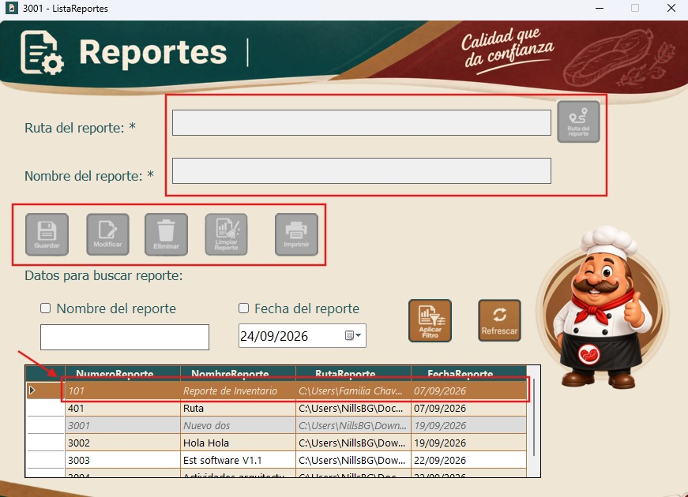
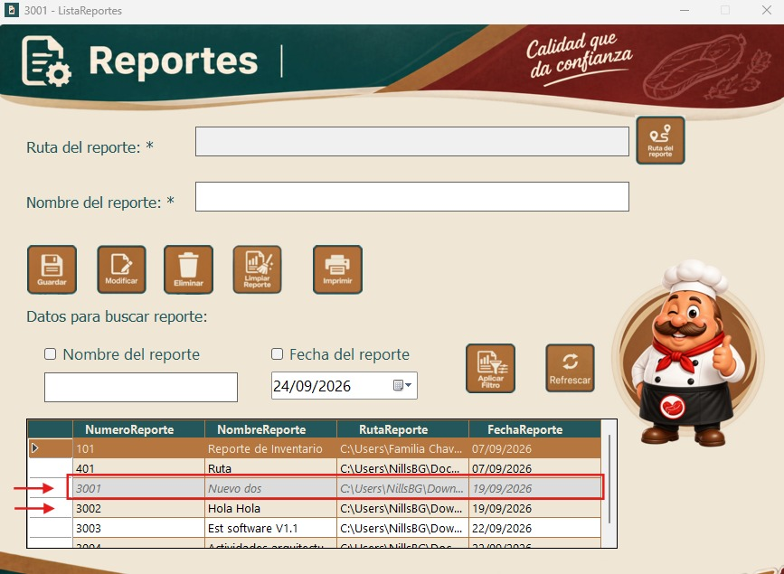
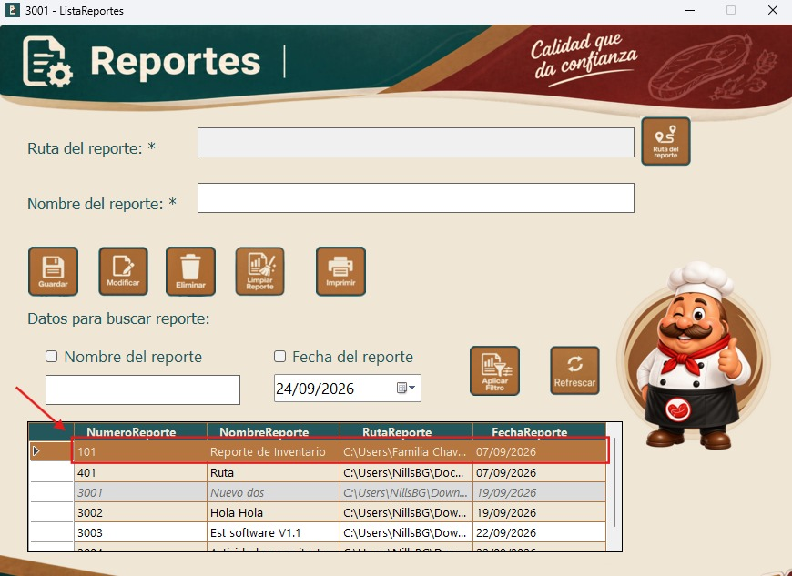
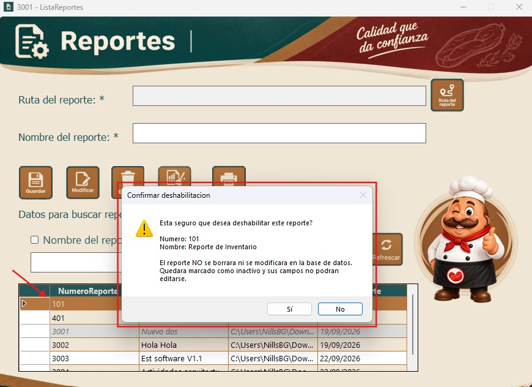
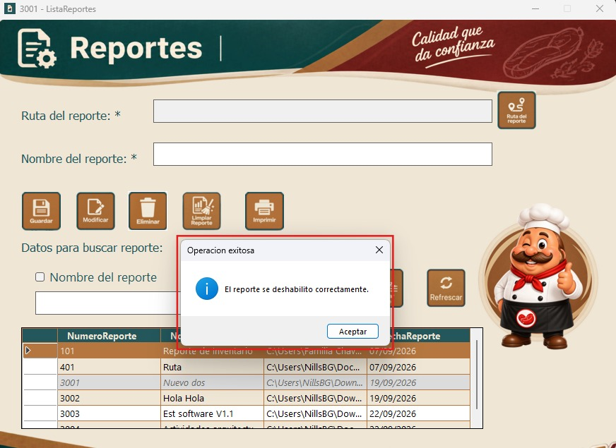
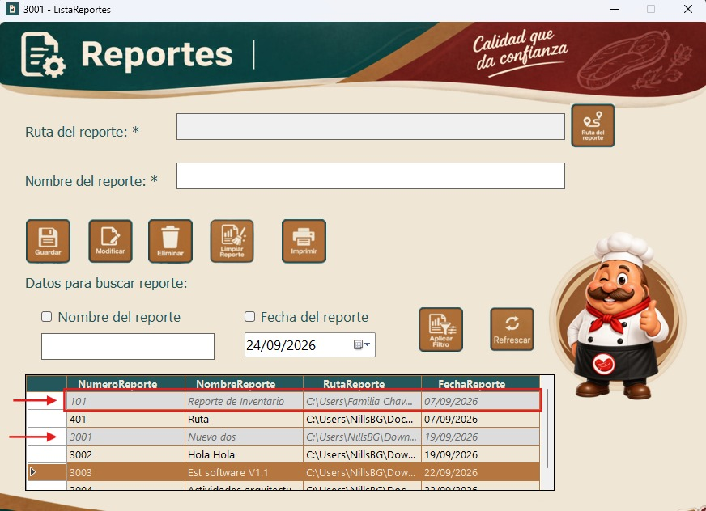

| Integrante | Carnet |
|---|---|
| Velveth Sarai Chavez Mejia | 0901-23-6269 |
| Nills Berducido Gomez | 0901-23-14275 |
| Brayan Moises Pinzon Lopez | 0901-23-10511 |
| Brian Andree De La Cruz Sosa | 0901-23-6124 |
| Gabriela Pinto Garcia | 9959-23-1087 |
| Carlos Eduardo Chin Caal | 0901-23-5686 |
| Jose Xavier Bolanos Tenas | 0901-23-2128 |
| Introducción | ................................................ | 4 |
| Funcionamiento | ................................................ | 5 |
| Seleccionar reporte | ................................................ | 5 |
| Hacer click en botón eliminar | ................................................ | 5 |
| Ventana de confirmación | ................................................ | 6 |
| Confirmar la des habilitación | ................................................ | 6 |
| Cancelar la acción | ................................................ | 6 |
| Mensaje de exito | ................................................ | 7 |
| Reporte marcado como deshabilitado | ................................................ | 7 |
| Bloqueo de los campos del reporte | ................................................ | 8 |
En esta ayuda se explica el funcionamiento del botón Eliminar del módulo Reporteador. Este botón no borra el reporte de la base de datos: lo deshabilita, es decir, lo marca como inactivo para que deje de utilizarse dentro del sistema sin perder la información que ya se registró sobre él.
Mientras un reporte esta deshabilitado, sus datos no se pueden modificar desde el formulario, y la fila correspondiente se distingue visualmente del resto de la tabla.

En la tabla de reportes, hacemos clic sobre la fila del reporte que deseamos deshabilitar.

Con el reporte seleccionado, hacemos clic en el botón Eliminar.

Antes de deshabilitar el reporte, el sistema siempre muestra una ventana de advertencia para confirmar la acción. Esto evita que un clic accidental deshabilite un reporte por error.
Al confirmar, el sistema muestra un mensaje indicando que el reporte se deshabilito correctamente.

La tabla se actualiza automáticamente y la fila del reporte deshabilitado se muestra en un color distinto al resto de los registros, para identificarlo con facilidad.

Si seleccionamos un reporte que ya está deshabilitado, los campos Nombre y Ruta del formulario, así como los botones Guardar, Modificar, Eliminar, Limpiar e Imprimir, quedan bloqueados, de manera que no se pueden utilizar mientras el reporte permanezca en ese estado.
